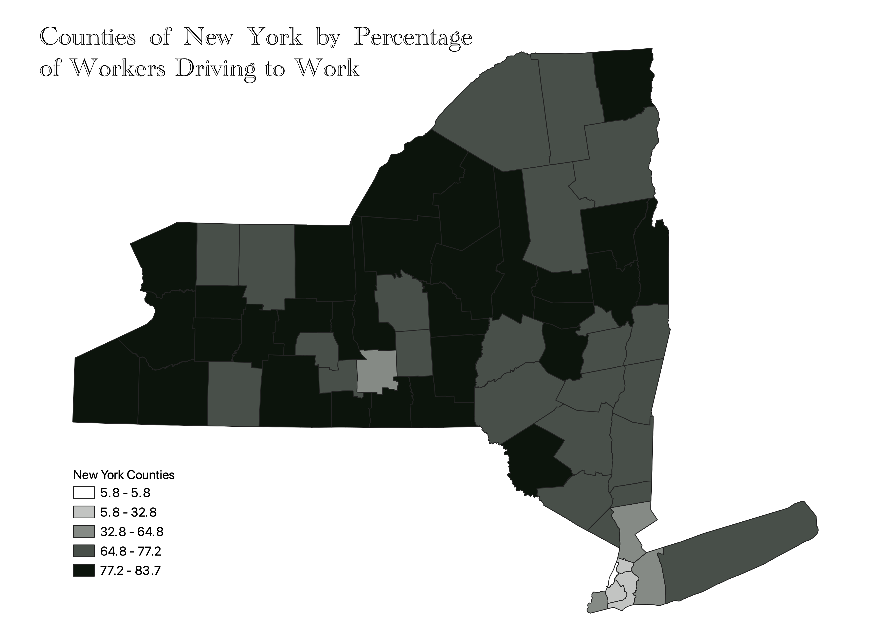

Homework 6: Census data choropleth
Fionn Kenny
This map shows the counties of New York State and what portion of their working population drives to alone every day. The areas with the least driving are lighter whereas the areas that drive most are darker. The region with the lowest portion of people driving is Manhattan and the surrounding New York City boroughs, as well as Ithaca and greater Tompkins County.

Data used for this project
CSV dataset
Link to shapefile